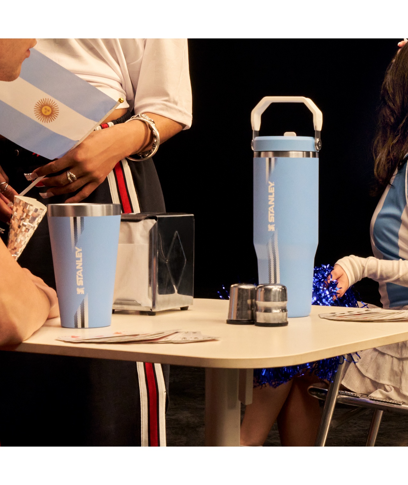
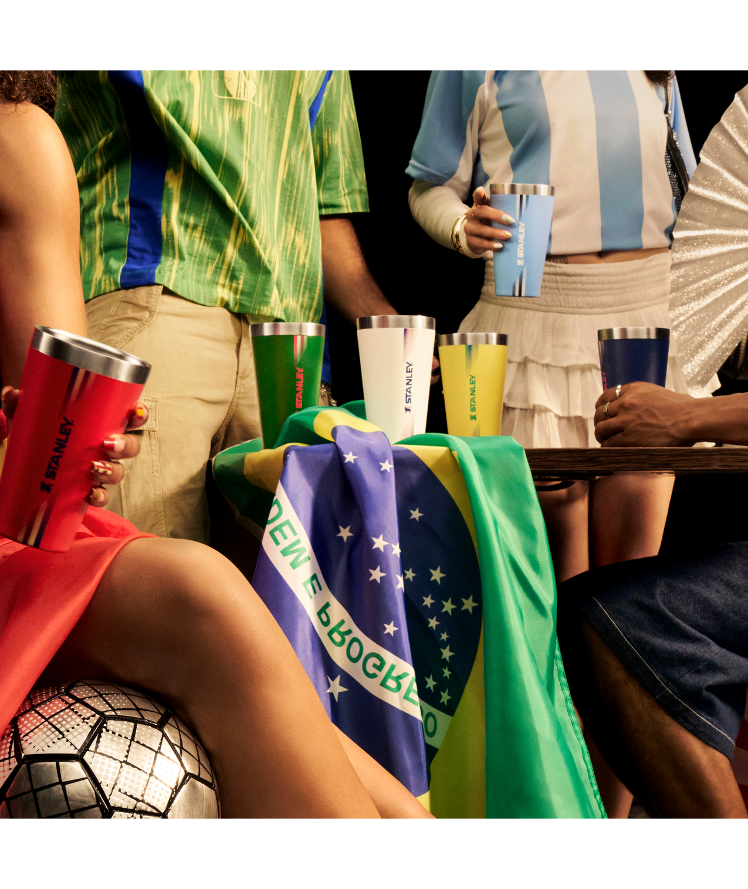
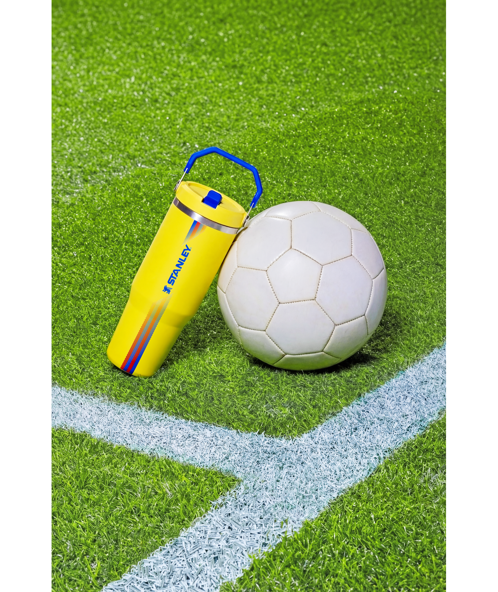

Instagram como cancha
Historias, posts o reels con tu Stanley, etiquetando a @Stanley1913_Bolivia.
Las inscripciones ya cerraron y Pasaporte Stanley 1913 ya está en marcha. Si ya activaste tu Pasaporte, ingresá para completar misiones, sumar sellos y seguir participando por premios Stanley.
La campaña continúa para quienes activaron su Pasaporte dentro del plazo establecido por Stanley Bolivia.
Es una experiencia digital para compradores Stanley Bolivia: completás misiones en Instagram, cargás tu captura como evidencia y desbloqueás sellos en tu pasaporte. Mientras más participás, más oportunidades tenés de acceder a premios Stanley.
Historias, posts o reels con tu Stanley, etiquetando a @Stanley1913_Bolivia.

Doce retos de comunidad, con algunas misiones bloqueadas por fase.

Al subir tu captura, la misión queda completada y el sello se desbloquea.
Usá tu Instagram y Carnet de Identidad si necesitás recuperarlo.
Publicá en Instagram, etiquetá a Stanley Bolivia y subí tu evidencia.
Cada misión válida desbloquea un sello en tu Pasaporte.
Bronze, Silver, Gold y Legend te acercan a sorteos y premios.
Los sorteos, horarios y novedades se comunican en StanleyLovers Bolivia.
StanleyLovers Bolivia es el canal oficial de Pasaporte Stanley 1913. Desde esta etapa anunciaremos horarios de sorteos, nuevas fases, misiones, ganadores y dinámicas exclusivas.
El próximo sorteo corresponde a participantes que alcancen el nivel Silver o superior, sujeto a validación.
Completá tus sellos, seguí avanzando de nivel y apuntá a Legend para participar por Ediciones Especiales Stanley.
Los siguientes sorteos corresponden a los participantes que alcancen cada nivel de Pasaporte. Los horarios serán comunicados por StanleyLovers Bolivia.
Tu nivel depende de la cantidad de sellos completados. Desde Silver se habilita la participación por premios intermedios; Gold habilita la participación en el sorteo general de la campaña y Legend habilita la participación en el sorteo de Ediciones Especiales Stanley.
Primer nivel del pasaporte.
Habilita la participación por premios intermedios de la campaña.
Habilita la participación en el sorteo general de la campaña.
Nivel máximo: habilita la participación en el sorteo de Ediciones Especiales Stanley.
Misiones habilitadas por fase. Podés ver el nombre de los retos futuros como pista, pero las características y la carga se habilitan fase por fase.
Mostrá tu Stanley acompañando tu día futbolero.
Compartí tu previa con tu producto Stanley favorito.
Subí un momento usando colores de celebración.
Características bloqueadas hasta su fase.
Características bloqueadas hasta su fase.
Características bloqueadas hasta su fase.
Queremos ver cómo vivís cada emoción.
Volvé al origen. Queremos conocer tu historia con Stanley.
Cada Stanley tiene una historia. Mostranos tu colección.
Disponible el 13 de julio. Andá preparando tus pronósticos mundialeros.
Toda gran historia tiene un protagonista. Contanos qué hace especial al tuyo.
La última misión no trata solamente sobre tu Stanley. Trata sobre vos. Disponible el 15 de julio.
Publicá tu misión en historias, post o reel; etiquetá a @Stanley1913_Bolivia; tomá captura; subila a tu Pasaporte; desbloqueá tu sello.
Mientras más sellos completás, más niveles desbloqueás y más oportunidades tenés de participar por premios Stanley.


Productos Stanley, Gift Cards y cajas regalo para participantes que alcancen el nivel Silver o superior, sujeto a validación.


Productos de la colección Country para participantes que alcancen el nivel Gold o superior, sujeto a validación.


Ediciones Especiales Stanley para quienes completen los 12 sellos y alcancen el nivel Legend.
Contenido destacado de participantes: momentos Stanley, misiones creativas y celebraciones compartidas en Instagram.




@participante
@participante
@participante
@participante
Las inscripciones a Pasaporte Stanley 1913 ya cerraron. Si ya activaste tu Pasaporte, podés ingresar con tu Instagram y Carnet de Identidad.
Las inscripciones a Pasaporte Stanley 1913 ya cerraron. La campaña continúa para quienes activaron su Pasaporte dentro del plazo establecido.
Usá la opción “Ya tengo mi Pasaporte” e ingresá tu usuario de Instagram y Carnet de Identidad para recuperar tu acceso.
Los horarios, anuncios de ganadores y novedades de cada fase se comunicarán en StanleyLovers Bolivia, el canal oficial de la campaña en Instagram.
Stanley Bolivia podrá revisar y validar la factura o respaldo cargado durante la inscripción, junto con las evidencias de misiones.
El CI es obligatorio y será el único documento válido para validar tu identidad y realizar la entrega de premios, en caso de resultar ganador.
Completá la misión, publicá el contenido en Instagram, etiquetá a @Stanley1913_Bolivia, tomá captura y subila a tu Pasaporte.
Sí. Cualquiera de esos formatos sirve, siempre que el contenido corresponda a la misión y etiquete a @Stanley1913_Bolivia.
No. Pasaporte Stanley muestra progreso, niveles, sellos y contenido destacado de comunidad, no ranking de usuarios.
Al completar 7 sellos alcanzás Silver y quedás habilitado para participar por premios intermedios, sujeto a validación de la campaña.
Al completar 10 sellos alcanzás Gold y quedás habilitado para participar en el sorteo general, sujeto a validación de la campaña.
Legend es el nivel máximo: 12 sellos completados y participación habilitada para el sorteo de Ediciones Especiales Stanley.
No. Es una misión lúdica y no competitiva. La recompensa es sólo el sello por participar.
Horarios de sorteos, anuncios de ganadores, nuevas fases, nuevas misiones y dinámicas exclusivas serán comunicados por los canales oficiales de Stanley Bolivia, incluyendo StanleyLovers Bolivia en Instagram.
No. Es una campaña recreativa de Stanley Bolivia y no está afiliada, patrocinada ni administrada por ninguna organización, torneo o competición oficial.